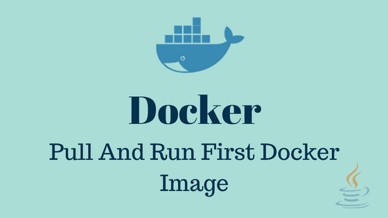

Pull And Run First Docker Image
published by Pradeep on July 22, 2018

Docker image is a file, which contains set of commands. When these commands are executed, instance of the image is created and this instance is called Container. We can assume image files are like Java’s class files and objects are container instances.
Pull docker image
Docker Store is a central repository for docker image files. This repository is maintained by Docker and it contains images of many major applications. In this section we will pull mysql image from docker store and then run it to create a container instance.
We can search for mysql-server in docker store. Here is the direct link of mysql-server page in docker store. All image files will have a dedicated page in docker store which provides basic information about the image and instructions to pull, run and configure it, also it shows contents of image file. Below image shows the structure of the page.

Lets pull mysql image from docker store. Open terminal and execute below command. Before executing this command make sure that docker is running. Refer Docker introduction for more details on Docker setup.
docker pull mysql/mysql-serverThis command will download mysql image and while downloading it prints some information on the console. On my terminal it printed below text;
Using default tag: latest (1)
latest: Pulling from mysql/mysql-server
b0efbbec3b2e: Pull complete
4d06a7b7ca82: Pull complete
7ddc24d9f468: Pull complete
8b211b61b1a0: Pull complete
Digest: sha256:f1cb1e3f0124601b1496f485e9f4401ad10138294b5a38d932089daafd555e34 (2)
Status: Downloaded newer image for mysql/mysql-server:latest (3)| 1 | tag is like version number. If we don’t mention the version then docker will download latest version by default. In the docker image page go to the tags tab to check all available versions/tags. Check point 3 below for more details on downloading specific tag. |
| 2 | Docker image files are immutable, means once the image is build its content will never change. Each image will have unique digest value. This shows the digest of mysql image which we downloaded. |
| 3 | In the pull command we didn’t mentioned the version so by default docker downloads latest version. We can provide specific version in the pull command, for example to pull 8.0 we can execute docker pull mysql/mysql-server:8.0 |
Run image file
In the previous section we downloaded mysql image. In this section we will run this image. Execute below command, which will create mysql container instance.
docker run mysql/mysql-serverWe use run sub-command to execute image files. If we downloaded multiple tags then we can provide specific tag name like docker run mysql/mysql-server:<tag>. Run command takes some time to execute and while execution it prints text in the terminal. Look for below two important lines in the output;
...
...
Warning: Unable to load '/usr/share/zoneinfo/zone1970.tab' as time zone. Skipping it.
[Entrypoint] GENERATED ROOT PASSWORD: ILOvILAt20fIwSYlMEtKoruNEzk (1)
[Server] 'user' entry 'healthchecker@localhost' ignored in --skip-name-resolve mode.
...
...
...
[System] [MY-010931] [Server] /usr/sbin/mysqld: ready for connections. Version: '8.0.11' socket: '/var/lib/mysql/mysql.sock' port: 3306 MySQL Community Server - GPL. (2)| 1 | Some where in the center of the logs, we should see generated root password. Note down this password, it will be different on your machine. We need this password to connect mysql. If we want to provide our own password then we can provide it in run command like this docker run -e MYSQL_ROOT_PASSWORD=root mysql/mysql-server. Here I provided 'root' as the password. |
| 2 | At the end of the logs we should see message saying ready for connections and also it shows version and port number. |
Stop container
In the above section we ran mysql as foreground process means terminal is taken up by the run command and we can not get prompt to enter other commands. To stop current running container first we need to execute below command in other terminal.
docker psThis command will list all running containers with some basic information for each container. Below are the some of the details it provides;
-
Container Id: Randomly generated unique Id to identify this container.
-
Ports: Ports exposed by this container.
-
Names: Random name assigned to this container.
Now we have the container id, we use this to stop the container. Execute below command;
docker stop b1b681db49f2b1b681db49f2 is the container id assigned to mysql container executing on my machine, this id will be different on your machine because it is a randomly generated id. Get this id from the result of docker ps command. Verify if container was stopped by running docker ps again, this time you should not see the mysql container in the result.
Connect to mysql container
In the previous sections we went through the process of starting and stopping containers. In this section we will test mysql container by connecting to it.
| Every container is different. Steps in this section explains the verification process of mysql container if we want verify any other container then we need to follow the process mentioned in the docker store page for that container. |
Lets start the mysql container;
docker run --name mysql -e MYSQL_ROOT_PASSWORD=root -d mysql/mysql-serverI used below options in the run command:
-
--name: We can provide custom name to the container
-
-e: This flag helps us to set environment variables for the container. In this case we used this to set mysql root password. Check mysql docker store page for all available environment options for mysql.
-
-d: Runs container in the background so we can continue to use the prompt in this terminal.
Because we are running container in the background we can not see the output logs on the terminal. We can see these logs by executing below command;
docker logs mysqldocker logs takes the container name and I provided mysql because in the previous run command I provided container name as mysql. We are having a running mysql container now lets execute bash in the mysql container so we can connect and execute some queries.
docker exec -it mysql bashdocker exec command runs the provided command with in the container. In this case we want bash to run in the mysql container. This will provide a bash prompt which is running in the mysql container. Now connect to the mysql like below;
mysql -u "root" -pThis command prompts for the mysql password, enter the password. Now we can execute sql queries on mysql container. Below query lists all available databases.
mysql> show databases;You can continue to execute mysql queries here.
Conclusion
In this article we learnt downloading images, running and testing containers. With this setup we can have mysql in the docker instead of on the machine.